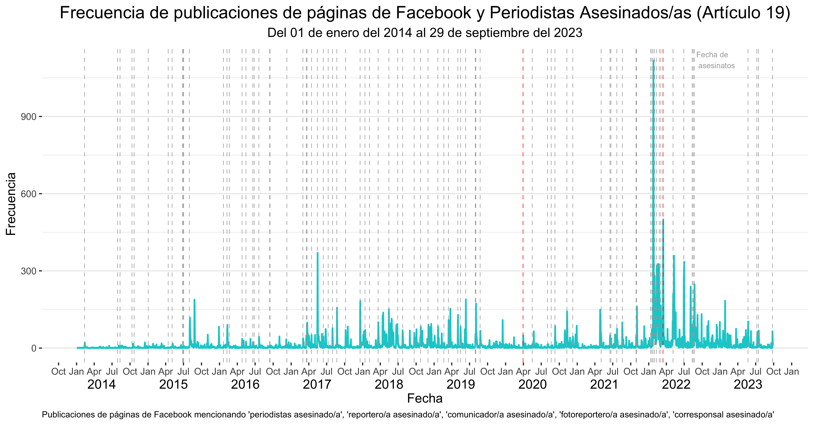

Code
db_periodistas_asesinados %>%
datatable(options = list(pageLength = 10))Análisis de Ruido Preeliminar
db_periodistas_asesinados %>%
datatable(options = list(pageLength = 10))db_publicaciones_completas %>%
slice(1:100) %>%
datatable(options = list(pageLength = 4))# Contar las frecuencias de publicaciones por fecha de la columna 'Post Created Date'
db_frecuencias_publicaciones <- db_publicaciones_completas |>
group_by(`Post Created Date`) |>
summarise(frecuencia_por_fecha = n()) |>
complete(`Post Created Date` = seq(min(`Post Created Date`),
max(`Post Created Date`),
by = "1 day"), fill = list(frecuencia_por_fecha = 0))
# Calcular promedio de frecuencias de publicaciones histórico 2014-2023
promedio_publicaciones_diarias <- mean(db_frecuencias_publicaciones$frecuencia_por_fecha, na.rm = TRUE)
# Calcular promedios de frecuencias de publicaciones anuales 2014-2023
años <- 2014:2023
list_promedio_publicaciones_anuales <- lapply(años, function(y) {
mean(db_frecuencias_publicaciones$frecuencia_por_fecha[year(db_frecuencias_publicaciones$`Post Created Date`) == y], na.rm = TRUE)
})
promedio_publicaciones_anuales <- setNames(unlist(list_promedio_publicaciones_anuales), años)
db_frecuencias_publicaciones <- db_frecuencias_publicaciones |>
mutate(promedio_por_mes = ave(frecuencia_por_fecha, format(`Post Created Date`, "%Y-%m"), FUN = mean, na.rm = TRUE)) |>
mutate(promedio_por_año = ave(frecuencia_por_fecha, format(`Post Created Date`, "%Y"), FUN = mean, na.rm = TRUE))
# Fechas de los asesinatos de María Elena Ferral y Armando Linares
fechas_asesinatos <- as.Date(c("2020-03-30", "2022-03-15"))
# Obtener todas las fechas de asesinatos de periodistas excepto las dos en fechas_asesinatos
fechas_asesinatos_todas <- db_periodistas_asesinados$Fecha[!(db_periodistas_asesinados$Fecha %in% fechas_asesinatos)]
# Gráfica de frecuencia de publicaciones (grafica_01)
grafica_01 <- ggplot(data = db_frecuencias_publicaciones, aes(x = `Post Created Date`)) +
geom_line(aes(y = frecuencia_por_fecha), color = "lightcoral", size = 0.75) +
geom_line(aes(y = promedio_por_mes), color = "darkred", size = 0.75) +
geom_line(aes(y = promedio_por_año), color = "dimgray", size = 0.75) +
geom_hline(yintercept = promedio_publicaciones_diarias, color = "black", linetype = "dashed", size = 0.5) +
geom_vline(xintercept = fechas_asesinatos, color = "red", linetype = "dashed", size = 0.25) +
scale_x_date(date_labels = "%b", date_breaks = "3 months") +
labs(
title = "Frecuencia de publicaciones de páginas de Facebook",
subtitle = "Del 01 de enero del 2014 al 29 de septiembre del 2023",
x = "2014 2015 2016 2017 2018 2019 2020 2021 2022 2023\nFecha",
y = "Frecuencia",
caption = "Publicaciones de páginas de Facebook mencionando 'periodistas asesinado/a', 'reportero/a asesinado/a', 'comunicador/a asesinado/a', 'fotoreportero/a asesinado/a', 'corresponsal asesinado/a'",
) +
annotate("text", x = as.Date("2014-06-01"), y = 880, label = paste("Promedio histórico:",
round(promedio_publicaciones_diarias, 2)), hjust = 0) +
annotate("text", x = as.Date("2020-04-15"), y = 1000, label = "Asesinato de MEF", hjust = 0) +
annotate("text", x = as.Date("2022-03-30"), y = 1000, label = "Asesinato de AL", hjust = 0) +
annotate("text", x = as.Date("2014-06-01"), y = 1010, label = "Publicaciones diarias", hjust = 0) +
annotate("text", x = as.Date("2014-06-01"), y = 970, label = "Promedio mensual", hjust = 0) +
annotate("text", x = as.Date("2014-06-01"), y = 930, label = "Promedio anual", hjust = 0) +
annotate("text", x = as.Date("2014-01-05"), y = 90, label = paste("Prom. 2014:", round(promedio_publicaciones_anuales[["2014"]], 2)), hjust = 0, size = 3) +
annotate("text", x = as.Date("2015-01-05"), y = 250, label = paste("Prom. 2015:", round(promedio_publicaciones_anuales[["2015"]], 2)), hjust = 0, size = 3) +
annotate("text", x = as.Date("2016-01-05"), y = 160, label = paste("Prom. 2016:", round(promedio_publicaciones_anuales[["2016"]], 2)), hjust = 0, size = 3) +
annotate("text", x = as.Date("2017-01-05"), y = 470, label = paste("Prom. 2017:", round(promedio_publicaciones_anuales[["2017"]], 2)), hjust = 0, size = 3) +
annotate("text", x = as.Date("2018-01-05"), y = 220, label = paste("Prom. 2018:", round(promedio_publicaciones_anuales[["2018"]], 2)), hjust = 0, size = 3) +
annotate("text", x = as.Date("2019-01-05"), y = 280, label = paste("Prom. 2019:", round(promedio_publicaciones_anuales[["2019"]], 2)), hjust = 0, size = 3) +
annotate("text", x = as.Date("2020-01-05"), y = 180, label = paste("Prom. 2020:", round(promedio_publicaciones_anuales[["2020"]], 2)), hjust = 0, size = 3) +
annotate("text", x = as.Date("2021-01-05"), y = 250, label = paste("Prom. 2021:", round(promedio_publicaciones_anuales[["2021"]], 2)), hjust = 0, size = 3) +
annotate("text", x = as.Date("2022-01-05"), y = 550, label = paste("Prom. 2022:", round(promedio_publicaciones_anuales[["2022"]], 2)), hjust = 0, size = 3) +
annotate("text", x = as.Date("2023-01-05"), y = 320, label = paste("Prom. 2023:", round(promedio_publicaciones_anuales[["2023"]], 2)), hjust = 0, size = 3) +
geom_segment(aes(x = as.Date("2014-01-01"), y = 1010, xend = as.Date("2014-05-01"), yend = 1010), color = "lightcoral", size = 0.75) +
geom_segment(aes(x = as.Date("2014-01-01"), y = 970, xend = as.Date("2014-05-01"), yend = 970), color = "darkred", size = 0.75) +
geom_segment(aes(x = as.Date("2014-01-01"), y = 930, xend = as.Date("2014-05-01"), yend = 930), color = "dimgray", size = 0.75) +
geom_segment(aes(x = as.Date("2014-01-01"), y = 880, xend = as.Date("2014-05-01"), yend = 880), color = "black", linetype = "dashed", size = 0.75) +
theme_bw() +
theme(
plot.title = element_text(size = 16, hjust = 0.5),
plot.subtitle = element_text(size = 12, hjust = 0.5),
plot.caption = element_text(size = 8, hjust = 0),
axis.title.x = element_text(size = 12),
axis.title.y = element_text(size = 12),
panel.grid.major.x = element_blank(),
panel.grid.minor.x = element_blank(),
panel.border = element_blank(),
)
grafica_01
# Gráfica de frecuencia de publicaciones con asesinatos de periodistas (grafica_02)
grafica_02 <- ggplot(data = db_frecuencias_publicaciones, aes(x = `Post Created Date`)) +
geom_line(aes(y = frecuencia_por_fecha), color = "darkturquoise", size = 0.75) +
geom_vline(xintercept = fechas_asesinatos, color = "red", linetype = "dashed", size = 0.25) +
geom_vline(xintercept = as.Date(fechas_asesinatos_todas),
color = "darkgray", linetype = "dashed", size = 0.25) +
annotate("text", x = as.Date("2022-09-01"), y = 1120, label = "Fecha de \n asesinatos", color = "darkgray", hjust = 0, size = 2.5) +
scale_x_date(date_labels = "%b", date_breaks = "3 months") +
labs(
title = "Frecuencia de publicaciones de páginas de Facebook y Periodistas Asesinados/as (Artículo 19)",
subtitle = "Del 01 de enero del 2014 al 29 de septiembre del 2023",
x = "2014 2015 2016 2017 2018 2019 2020 2021 2022 2023\nFecha",
y = "Frecuencia",
caption = "Publicaciones de páginas de Facebook mencionando 'periodistas asesinado/a', 'reportero/a asesinado/a', 'comunicador/a asesinado/a', 'fotoreportero/a asesinado/a', 'corresponsal asesinado/a'"
) +
theme_bw() +
theme(
plot.title = element_text(size = 16, hjust = 0.5),
plot.subtitle = element_text(size = 12, hjust = 0.5),
plot.caption = element_text(size = 8, hjust = 0),
axis.title.x = element_text(size = 12),
axis.title.y = element_text(size = 12),
panel.grid.major.x = element_blank(),
panel.grid.minor.x = element_blank(),
panel.border = element_blank(),
)
grafica_02
grafica_02
# Enumeramos los países por número de observaciones
total_publicaciones <- nrow(db_publicaciones_completas)
print(total_publicaciones)
paises_por_numero_publicaciones <- sort(table(db_publicaciones_completas$`Page Admin Top Country`), decreasing = TRUE)
print(paises_por_numero_publicaciones)
# Creamos una nueva base de datos con los 25 paises con más publicaciones
db_paises_top25publicaciones <- db_publicaciones_completas |>
group_by(`Page Admin Top Country`) |>
summarise(Count = n()) |>
arrange(desc(Count)) |>
mutate(pais = ifelse(rank(-Count, na.last = "keep") <= 25, `Page Admin Top Country`, "Otros")) |>
group_by(pais) |>
summarise(numero_publicaciones = sum(Count)) |>
arrange(desc(numero_publicaciones)) |>
mutate(porcentaje_publicaciones = (numero_publicaciones / total_publicaciones) * 100,
publicaciones_acumuladas = cumsum(numero_publicaciones)) |>
mutate(porcentaje_acumulado = (publicaciones_acumuladas / total_publicaciones) * 100) |>
replace_na(list(pais = "NA"))
# Gráfico de barra de publicaciones por país (grafica_03)
grafica_03 <- ggplot(db_paises_top25publicaciones, aes(x = reorder(pais, -numero_publicaciones), y = numero_publicaciones)) +
geom_bar(color = "darkred", fill = "darkred", stat = "identity") +
geom_text(aes(label=ifelse(pais == "MX", as.character(numero_publicaciones), "")),
vjust = 1.5, color = "white", size = 3) +
geom_text(aes(label=ifelse(pais == "MX", sprintf("%.2f%%", porcentaje_publicaciones), "")),
vjust = 4, color = "white", size = 2.5) +
geom_text(data = subset(db_paises_top25publicaciones, pais != "MX"),
aes(label = numero_publicaciones),
vjust = -2, color = "black", size = 3) +
geom_text(data = subset(db_paises_top25publicaciones, pais != "MX"),
aes(label = sprintf("%.2f%%", porcentaje_publicaciones)),
vjust = -1, color = "black", size = 2.5) +
labs(title = "Publicaciones de páginas de Facebook por país",
x = "País",
y = "Número de publicaciones",
caption = "Publicaciones de páginas de Facebook mencionando 'periodistas asesinado/a', 'reportero/a asesinado/a', 'comunicador/a asesinado/a', 'fotoreportero/a asesinado/a', 'corresponsal asesinado/a'") +
theme_bw() +
theme(
plot.title = element_text(size = 16, hjust = 0.5),
plot.subtitle = element_text(size = 12, hjust = 0.5),
plot.caption = element_text(size = 8, hjust = 0),
axis.title.x = element_text(size = 12),
axis.title.y = element_text(size = 12),
axis.text.x = element_text(angle = 0),
panel.grid.major.x = element_blank(),
panel.grid.minor.x = element_blank(),
panel.border = element_blank(),
)
grafica_03
# Creamos una base de datos con el número de menciones de México por país
db_paises_menciones_mex <- db_publicaciones_completas |>
filter(if_any(c(Message, `Image Text`, `Link Text`, Description),
~str_detect(., regex("méx|mex", ignore_case = TRUE)))) |>
group_by(`Page Admin Top Country`) |>
summarise(menciones_mexico = n())
#db_publicaciones_no_mencionan_mex <- anti_join(db_publicaciones_completas, db_paises_menciones_mex) |>
# select(`Facebook Id`, `Page Category`, `Page Admin Top Country`, `Page Created`, `Post Created`, Message, `Image Text`, `Link Text`, Description)
#paises_por_numero_publicaciones_sin_mencion_mex <- sort(table(db_publicaciones_no_mencionan_mex$`Page Admin Top Country`), decreasing = TRUE)
#print(paises_por_numero_publicaciones_sin_mencion_mex)
# Creamos una base de datos con las menciones de nombres periodistas asesinados por país:
# Inicializar un dataframe para almacenar las menciones por periodista y país
menciones_periodistas_por_pais <- data.frame(
Nombre = character(0),
Page_Admin_Top_Country = character(0),
menciones = numeric(0)
)
# Función para remover acentos y convertir a minúsculas
normalizar_texto <- function(texto) {
texto <- str_to_lower(texto)
texto <- str_replace_all(texto, "á", "a")
texto <- str_replace_all(texto, "é", "e")
texto <- str_replace_all(texto, "í", "i")
texto <- str_replace_all(texto, "ó", "o")
texto <- str_replace_all(texto, "ú", "u")
return(texto)
}
# Función para generar variantes de un nombre completo
generar_variantes_nombre <- function(nombre) {
partes <- unlist(str_split(nombre, " "))
variantes <- character(0) # Inicializar vector vacío para variantes
# Generar variantes solo si hay nombre y apellido
if (length(partes) > 1) {
variantes <- c(
paste0(substr(partes[1], 1, 1), ". ", partes[length(partes)]), # A. Linares
paste0(partes[1], " ", substr(partes[length(partes)], 1, 1), ".") # Armando L.
)
}
return(variantes)
}
# Función buscar_nombre_flexible
buscar_nombre_flexible <- function(nombre) {
nombre <- normalizar_texto(nombre)
variantes <- generar_variantes_nombre(nombre)
regex_busqueda <- paste(variantes, collapse="|")
return(db_publicaciones_completas |>
filter(if_any(c(Message, `Image Text`, `Link Text`, Description),
~str_detect(normalizar_texto(.), regex(regex_busqueda, ignore_case = TRUE))))
)
}
# Iterar sobre los nombres de periodistas y contar menciones por país
for (nombre in db_periodistas_asesinados$Nombre) {
menciones_por_pais <- buscar_nombre_flexible(nombre) |>
group_by(`Page Admin Top Country`) |>
summarise(menciones = n())
menciones_por_pais$Nombre <- nombre
menciones_periodistas_por_pais <- bind_rows(menciones_periodistas_por_pais, menciones_por_pais)
}
# Eliminamos valores y variables no necesarios
rm(menciones_por_pais)
rm(nombre)
menciones_periodistas_por_pais <- menciones_periodistas_por_pais |>
select(-Page_Admin_Top_Country)
# Sumar las menciones por país en la base de datos intermedia
db_paises_menciones_periodistas <- menciones_periodistas_por_pais |>
group_by(`Page Admin Top Country`) |>
summarise(menciones_periodistas = sum(menciones))
# Creamos una base de datos de publicaciones y menciones de periodistas por país
db_paises_menciones <- db_publicaciones_completas |>
group_by(`Page Admin Top Country`) |>
summarise(
numero_publicaciones = n()
) |>
left_join(db_paises_menciones_mex, by = "Page Admin Top Country") |>
replace_na(list(menciones_mexico = 0)) |>
left_join((db_paises_menciones_periodistas)) |>
replace_na(list(menciones_periodistas = 0)) |>
arrange(-numero_publicaciones)
# Calculando los totales
totales_paises <- db_paises_menciones |>
summarise(`Page Admin Top Country` = "Total",
numero_publicaciones = sum(numero_publicaciones),
menciones_mexico = sum(menciones_mexico),
menciones_periodistas = sum(menciones_periodistas))
# Agregando la fila de totales al principio de db_paises_menciones
db_paises_menciones <- bind_rows(totales_paises, db_paises_menciones)
rm(totales_paises)
# Agregando las columnas de porcentaje con redondeo a dos decimales
db_paises_menciones <- db_paises_menciones |>
mutate(porcentaje_publicaciones = round((numero_publicaciones / numero_publicaciones[1]) * 100, digits = 2)) |>
select(`Page Admin Top Country`, numero_publicaciones, porcentaje_publicaciones, menciones_mexico, everything())
# Mostramos la tabla
kable(db_paises_menciones, format = "html", col.names = c("País", "Número de publicaciones", "% del Total", "Número de menciones de México", "Número de menciones de periodistas mexicanos asesinados/as"),
caption = " Tabla 01: Número de publicaciones de páginas de Facebook por país y sus menciones de México y de nombres de periodistas asesinados/as") |>
kable_styling(bootstrap_options = c("striped", "hover"))# Mostramos la tabla
kable(db_paises_menciones, format = "html", col.names = c("País", "Número de publicaciones", "% del Total", "Número de menciones de México", "Número de menciones de periodistas mexicanos asesinados/as"),
caption = " Tabla 01: Número de publicaciones de páginas de Facebook por país y sus menciones de México y de nombres de periodistas asesinados/as") |>
kable_styling(bootstrap_options = c("striped", "hover"))| País | Número de publicaciones | % del Total | Número de menciones de México | Número de menciones de periodistas mexicanos asesinados/as |
|---|---|---|---|---|
| Total | 48007 | 100.00 | 20819 | 18581 |
| MX | 33158 | 69.07 | 16423 | 15794 |
| US | 1900 | 3.96 | 1017 | 523 |
| ES | 1599 | 3.33 | 470 | 213 |
| CO | 1430 | 2.98 | 225 | 164 |
| AR | 1361 | 2.84 | 372 | 148 |
| EC | 1358 | 2.83 | 157 | 145 |
| PE | 1107 | 2.31 | 215 | 181 |
| NA | 855 | 1.78 | 397 | 438 |
| PY | 693 | 1.44 | 23 | 60 |
| CL | 598 | 1.25 | 158 | 65 |
| VE | 487 | 1.01 | 181 | 107 |
| HN | 443 | 0.92 | 78 | 42 |
| BO | 403 | 0.84 | 156 | 71 |
| GT | 350 | 0.73 | 116 | 112 |
| SV | 307 | 0.64 | 93 | 24 |
| CR | 296 | 0.62 | 106 | 45 |
| NI | 259 | 0.54 | 61 | 37 |
| DO | 256 | 0.53 | 70 | 53 |
| FR | 120 | 0.25 | 47 | 21 |
| PR | 112 | 0.23 | 32 | 7 |
| PA | 105 | 0.22 | 35 | 13 |
| VN | 94 | 0.20 | 47 | 70 |
| DE | 93 | 0.19 | 56 | 22 |
| UY | 88 | 0.18 | 37 | 21 |
| GB | 68 | 0.14 | 41 | 37 |
| PK | 62 | 0.13 | 31 | 54 |
| RU | 58 | 0.12 | 33 | 9 |
| BR | 50 | 0.10 | 17 | 11 |
| CU | 35 | 0.07 | 12 | 7 |
| IT | 35 | 0.07 | 16 | 3 |
| CA | 29 | 0.06 | 14 | 23 |
| IN | 29 | 0.06 | 10 | 10 |
| BE | 26 | 0.05 | 15 | 12 |
| ID | 16 | 0.03 | 6 | 6 |
| QA | 15 | 0.03 | 13 | 11 |
| UA | 13 | 0.03 | 2 | 4 |
| PH | 10 | 0.02 | 7 | 5 |
| CN | 9 | 0.02 | 3 | 1 |
| TR | 9 | 0.02 | 2 | 0 |
| AT | 7 | 0.01 | 7 | 6 |
| AU | 7 | 0.01 | 1 | 0 |
| IL | 7 | 0.01 | 1 | 2 |
| LB | 7 | 0.01 | 1 | 2 |
| BD | 6 | 0.01 | 3 | 1 |
| CH | 6 | 0.01 | 1 | 0 |
| JP | 4 | 0.01 | 1 | 0 |
| AE | 3 | 0.01 | 0 | 0 |
| KH | 3 | 0.01 | 2 | 0 |
| AW | 2 | 0.00 | 1 | 1 |
| MA | 2 | 0.00 | 1 | 0 |
| NL | 2 | 0.00 | 1 | 0 |
| NO | 2 | 0.00 | 1 | 0 |
| NZ | 2 | 0.00 | 0 | 0 |
| SE | 2 | 0.00 | 0 | 0 |
| XK | 2 | 0.00 | 1 | 0 |
| BZ | 1 | 0.00 | 0 | 0 |
| IE | 1 | 0.00 | 1 | 0 |
| IQ | 1 | 0.00 | 0 | 0 |
| IR | 1 | 0.00 | 1 | 0 |
| PS | 1 | 0.00 | 0 | 0 |
| SK | 1 | 0.00 | 1 | 0 |
| TW | 1 | 0.00 | 0 | 0 |